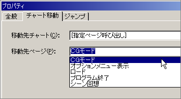

チュートリアル
LiveNovelでは簡単にCGモードを実現することができます。
まず、「プロジェクト」メニューの「オプション」を選択してください。オプションダイアログが出たら、「CGモード」タブを選択します。
「リスト」では、CGモードで表示させたい画像ファイルを選びます。グラフィックフォルダの中から加えたいファイルをリストに追加していってください。
「デザイン」はサムネイル画面をどのようにデザインするかといった設定、「サウンド」はCGモードで使用するBGMや効果音の設定です。どちらも詳細はこちらをご覧ください。
設定が終わったらOKをクリックしてダイアログを閉じます。
次にサムネイル画面用の画像ファイルを用意します。画像の大きさは自由ですが、うまく画面に並ぶようにオプションのデザイン設定を調整してください。サムネイル用の画像ファイルはグラフィックフォルダの中の「CGモード」フォルダの中に入れてください。ファイル名は本編画像と同じにしてください。ただし、サムネイルはGraphicsGaleファイルでなければならないので、本編画像がシネマの場合はGALに変えてください。例えば、本編の画像が イベントCG1.GAL なら同じ イベントCG1.GAL に、本編の画像が イベントCG2.LCM なら イベントCG2.GAL になります。
実際にCGモードを実行するには、「チャート呼び出し」ノードを使って、『［指定ページ呼び出し］CGモード』を呼び出します。
